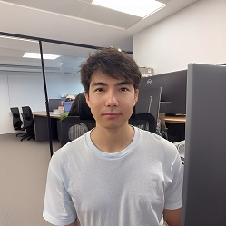
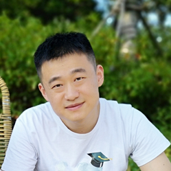
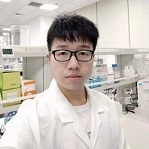
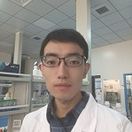

Members
Chan Yun Shen Winston
 曾永昇
曾永昇
Principal investigator, Ph.D.
Winston graduated from the National University of Singapore and did his research training in the laboratory of renowned stem cell scientist Prof Ng Huck Hui, in the Genome Institute of Singapore (GIS). After graduation, he continued working as a postdoc and an innovation fellow in GIS looking into translating research outcomes. He is also an awardee of the Gilead Sciences Research Scholars in Liver Disease Asia 2019. Winston believes that science is a team sport and invites like minded individual to join the team!
Staff
Freda Yue Liu
 刘悦
刘悦
Research assistant, MNSc
Freda graduated from University of Melbourne majoring Pharmacology and Nursing Science. Received her research training at Royal Melbourne hospital in Australia. She joined Winston’s lab at the July of 2020 and worked as a research assistant. She is enthusiastic about cell biology, signaling pathway and therapeutic application of small molecules. She loves movie,travelling and small animals with fur.
Jiayi
 郑嘉怡
郑嘉怡
Research Assistant/Lab Manager, BMLSc
Jiayi has a Bachelor in Medical Laboratory Science at Queensland University of Technology. She has applied her skills during internships in clinical pathology and hospital. In Sep 2020, she joined Winston’s lab to study and practice basic biology experimental skills as a research assistant, and is taking care of the administrative work for the lab at the same time. She likes taking photographs, and enjoys playing badminton.
Shuotong
 石铄铜
石铄铜
Research assistant, MBME
Shuotong earned her master of engineering science in Biomedical Engineering at the University of New South Wales (Sydney, Australia) in Jan 2020. At UNSW, she showed great interest in cellular and tissue engineering, and gained some experience on cell culturing. Shuotong joined the Winston’s Lab as a Research Assistant in Nov 2020 to build more cell biology knowledge. She likes to listen to pop music, travel and experience different cultures and different lifestyles.
Shixiang
王世祥
Research assistant, MBE
Shixiang got a bachelor's degree in biotechnology at Huazhong University of Science and Technology (Wuhan, China) and a master's degree in bio-engineering at Huazhong Agricultural University (Wuhan, China). He joined the lab as a research assistant to improve his experimental skills and learn theoretical knowledge in July 2021. He keeps the curiosity about new things and loves to explore the unknown. He also has a great interest in music and astronomy.
Lingyan
杨令延
Associate Professor, PhD
Lingyan graduated from the University of Science and Technology of China with a PhD’s degree in cell biology. He did his research training in the Key Laboratory for Nano-Bio Interface in Chinese Academy of Sciences. He joined Winston’s lab at the July of 2021 and worked as an associate professor. Lingyan has a strong interest in stem cell and exosomes research for disease diagnosis and treatment. He dedicates to basic research and translational applications of human health. He likes reading, playing table tennis, and traveling with his family.
Jianying
盛建英
Research assistant, MCB
Jian Ying got a bachelor’s degree in cell biology and a master’s degree in nursing at Soochow University (Suzhou, China). In July 2021, she joined the lab as a research assistant attracted by stem cell biology, hoping to learn experimental skills with hepatic organoid culture and do research work closely related to hepatic heterogeneity. She likes to stroll in the park in beautiful spring and crispy fall, to be a couch potato in hot summer and cold winter.
Students
Jisong Yan
晏季松
Master Candidate
Ji Song graduated from Henan University of Technology with a bachelor‘s degree in bioengineering. He is a graduate student in Yunnan University now. After entering school, he participated in the Yunnan University-Max-Planck Center for Tissue Stem Cell Research and Regenerative Medicine Joint Training Program to learn genetic control of stem cells in Winston’s lab. As a quiet boy, his biggest hobby is reading, especially history.
Alumni
Leonard Hao
郝嘉杰